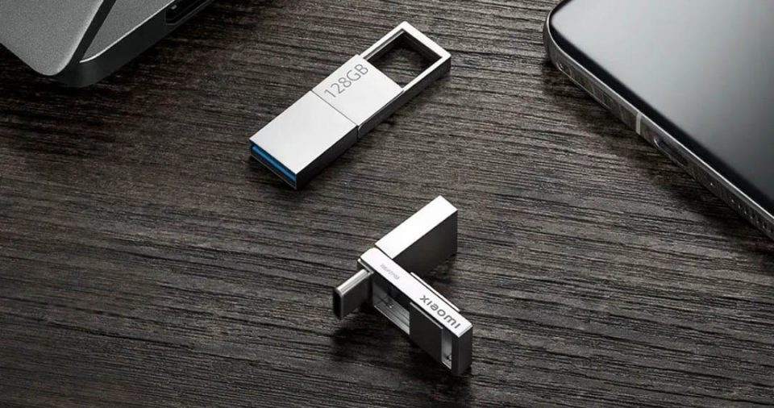
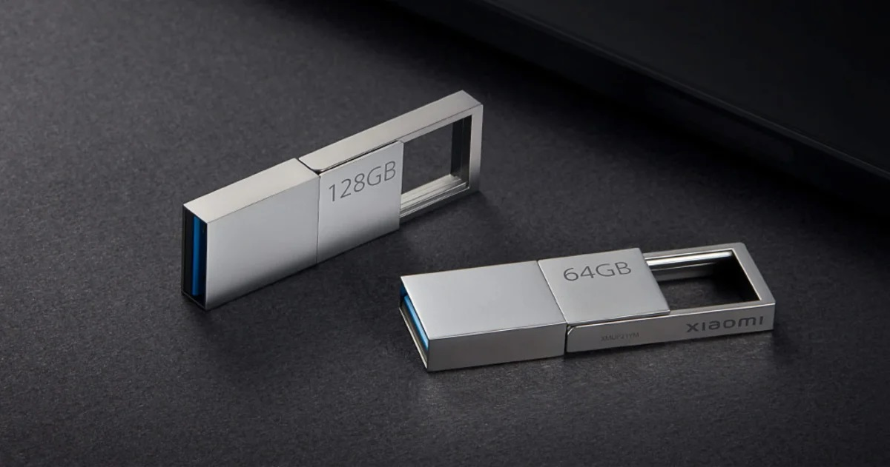

Nuevo Xiaomi U Disk Flash Drive, una memoria USB 3.2 para tu ordenador o móvil

Xiaomi cuenta con una gran variedad de accesorios dentro de la sección informática. Entre estos encontramos el Xiaomi Mi Portable Mouse 2 o la nueva Xiaomi U Disk Flash Drive, una unidad de almacenamiento USB que destaca por su alta velocidad de lectura.
Presentado en China, esta nueva unidad de almacenamiento hace uso del estándar USB 3.2 Gen 1, contando con un puerto USB A destinado a su uso en ordenadores y un USB Tipo C que podemos conectar a prácticamente cualquier dispositivo móvil.
Así es el nuevo Xiaomi U Disk Flash Drive, características y precio
En detalle, el nuevo Xiaomi U Disk Flash Drive se presenta junto a un diseño minimalista, en acabado metálico. Además, su diseño resulta de lo más práctico. A primera vista puede llegar a parecer una unidad de almacenamiento tradicional, pero la realidad es que que esconde un puerto USB Tipo C.
Así mismo, este ha sido fabricado haciendo uso de materiales como la aleación de zinc. Gracias a ello, la disipación de calor resulta más óptima, especialmente pensada para las alta tasas de velocidad a las que es capaz de llegar este Xiaomi U Disk Flash Drive.

Al hacer uso del estándar USB 3.2 Gen 1, el Xiaomi U Disk Flash Drive es capaz de alcanzar los 150MB/s de lectura, siendo compatible con sistemas Windows, MacOS y Linux. Además, su puerto USB Tipo C resulta compatible con sistemas Android 4.4 o superior.
En cuanto a precio, el Xiaomi U Disk Flash Drive ya se vende en China por 99 yuanes. En cambio, si queremos la de 128GB, su precio se eleva hasta los 169 yuanes.
Por ahora, solo es posible comprar la memoria Xiaomi U Disk Flash Drive en China. No obstante, lo más probable es que no haya que esperar demasiado tiempo hasta poder encontrarla en las principales tiendas de importación como AliExpress, donde sí es posible comprar las anteriores generaciones de este producto.